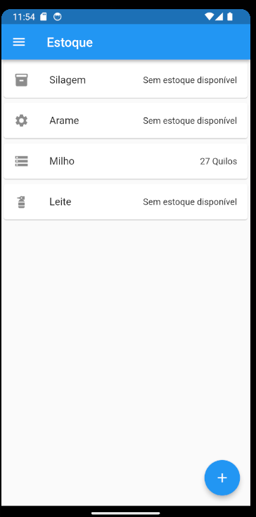
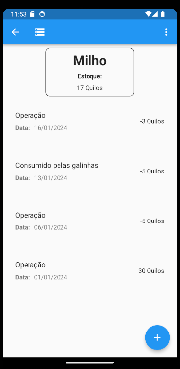
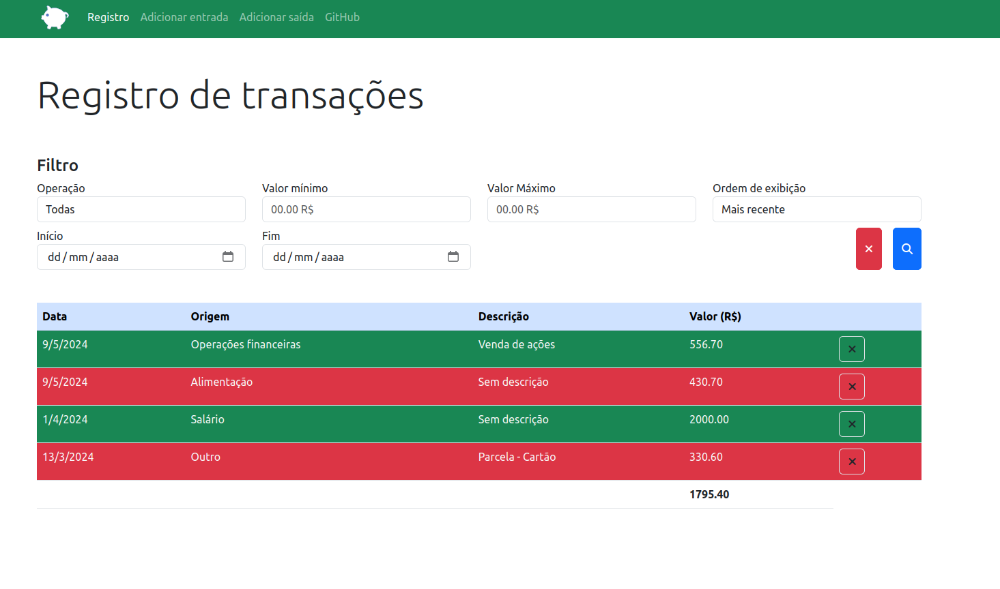

Portfólio
OrganizAgro
Aplicativo móvel que integra controle de estoque, controle financeiro e previsão do tempo
Projeto desenvolvido durante a disciplina de Atividade Extensionista II da Uninter
Tecnologias utilizadas:
- Flutter
Projeto


Scrapping simples com python
Script simples que desenvolvi para verificar se sites possuem determinados elementos no seu html
Funcionamento
- O programador insere um arquivo csv ou uma planilha com uma coluna contendo a url e outra com o trecho de html buscado
- Pode-se alterar definir os nomes das colunas modificando as constantes "URL_COLUMN" e "QUERY_COLUMN"
- O script retornará os logs com as informações sobre a busca e criará uma planilha nova na pasta "saida" com os resultados
Ferramentas utilizadas:
- Python
- Biblioteca pandas
- Biblioteca requests
Projeto
Supports
Fórum de dúvidas simples
Ferramentas utilizadas:
- Laravel
- Bootstrap
- PHP
- MySQL
Funcionalidades:
- Cadastrar novo usuário e fazer login
- Criar, editar e remover dúvidas
- Criar, editar e remover respostas
- Visualizar todas as dúvidas do fórum
- Visualizar todas as dúvidas que o próprio usuário postou
Projeto
App de orçamento pessoal
Aplicação web simples para registro de entrada e saída de capital
Tecnologias utilizadas
- HTML
- Bootstrap
- JavaScript
Projeto
